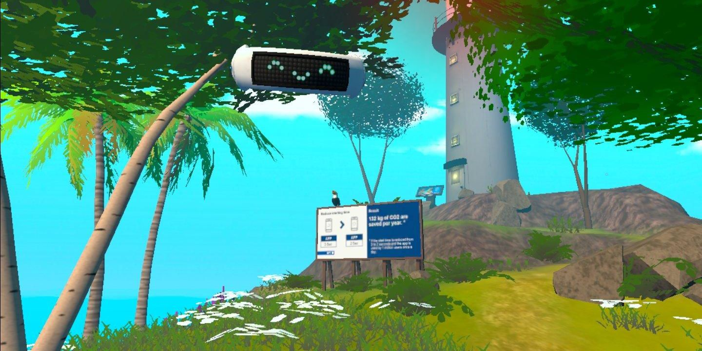
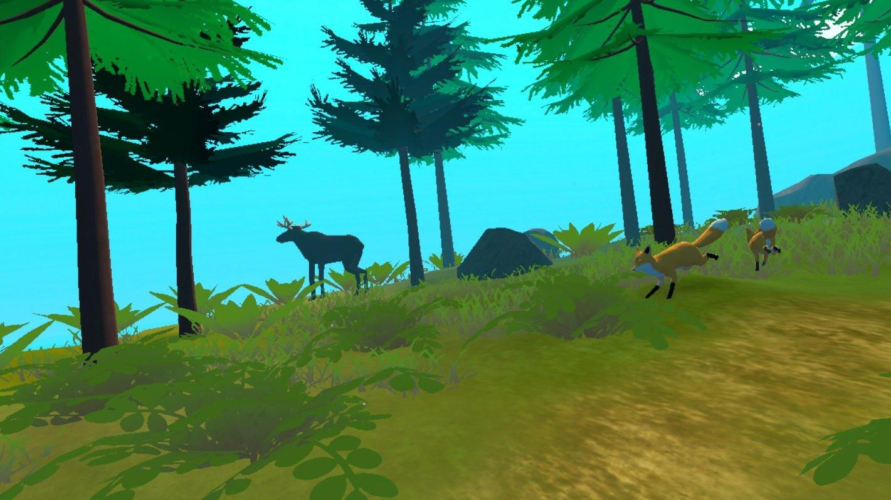
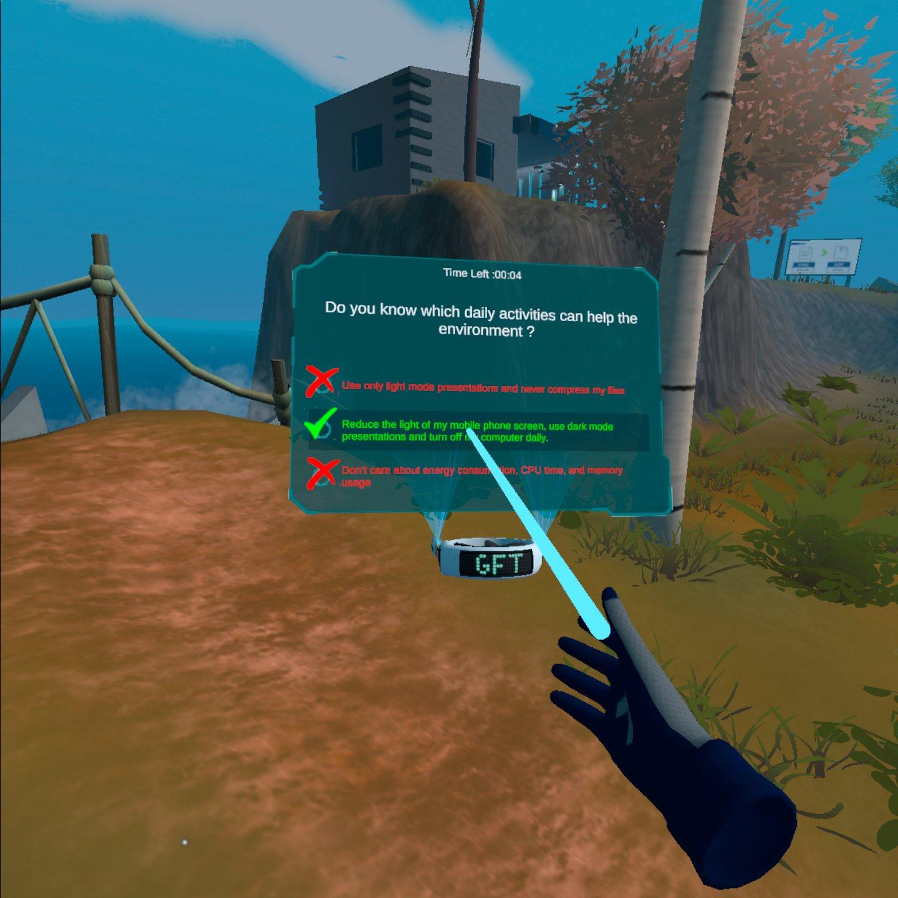
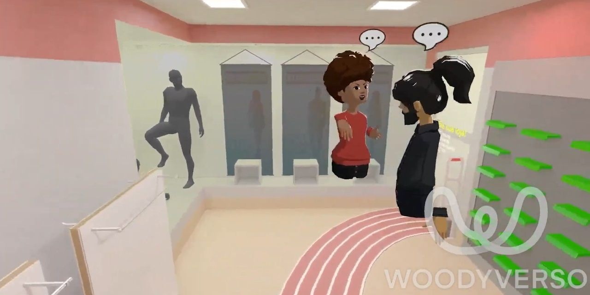

PROYECTO INMERSIVO
GreenCoding Experience
Una experiencia de realidad virtual guiada por decisiones, impacto ambiental y transformación progresiva del entorno.
Descubrir proyectoSOBRE MI TRABAJO EN GESTIÓN DE PROYECTOS
Mi trabajo de gestión convierte objetivos amplios en etapas claras mediante organización, comunicación y seguimiento.
Conecto equipos creativos y técnicos, organizo prioridades, hago seguimiento de cronogramas y ayudo a que los proyectos avancen con claridad. Mi experiencia en videojuegos y tecnología también me permite comprender las necesidades de cada etapa de producción.
Estos proyectos muestran iniciativas en las que la planificación, la colaboración y la visión de producto fueron tan importantes como la ejecución.

PROYECTO INMERSIVO
Una experiencia de realidad virtual guiada por decisiones, impacto ambiental y transformación progresiva del entorno.
Descubrir proyecto
EDUCACIÓN Y PRODUCCIÓN
Iniciativa centrada en organizar conocimientos, actividades y colaboración en proyectos creativos.
Descubrir proyecto
COMUNIDAD Y PROYECTOS
Proyecto centrado en conectar personas, iniciativas y oportunidades mediante una estructura colaborativa.
Descubrir proyecto
PRODUCTO Y COLABORACIONES
Conectar marcas, experiencia digital y entorno físico para crear una propuesta de producto coherente.
Descubrir proyecto